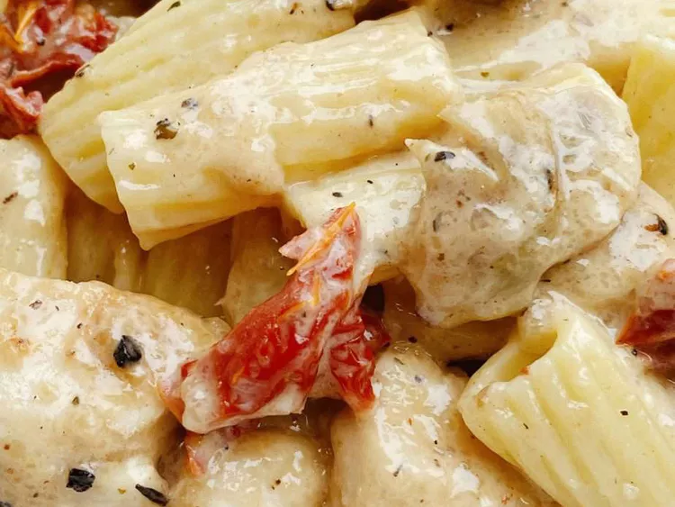

This pasta dish layers flavors and can be made in under 30 minutes, add a salad and crusty bread and dinner is done.
- 1 (8 ounce) package rigatoni pasta
- 1 tablespoon salt
- 1 pound skinless, boneless chicken breasts, cut into bite-sized pieces
- 1 tablespoon herb-infused olive oil
- ¼ cup tapioca starch
- 1 teaspoon Italian seasoning
- ⅛ teaspoon freshly ground black pepper
- ⅛ teaspoon freshly ground black pepper
- ¾ cup water
- ⅓ cup sliced fresh mushrooms
- ¼ cup chopped marinated artichoke hearts
- 2 tablespoons chopped oil-packed sun-dried tomatoes
- 3 cloves minced garlic
- ⅓ cup Chardonnay wine
- ¼ cup heavy whipping cream
- 2 ounces shredded aged Cheddar cheese
- Bring a large pot with water and 1 tablespoon salt to a boil. Cook rigatoni in the boiling water, stirring occasionally until tender yet firm to the bite, about 10 minutes. Drain and reserve pasta water.
- Meanwhile, combine tapioca starch, Italian seasoning, salt, and black pepper in a bowl. Add chicken pieces and toss to coat.
- Heat olive oil in a skillet until it shimmers. Add chicken pieces and cook until browned, about 5 minutes. You might be tempted to add more olive oil or butter, don't do this.
- Pour in reserved pasta water and add mushrooms, artichoke hearts, sun-dried tomatoes, and garlic. Cook about 5 minutes.
- Mix in white wine, cream and Cheddar cheese. Whisk until sauce is slightly thickened. Add rigatoni and toss to combine.
- Add rigatoni and toss to combine. Serve immediately.